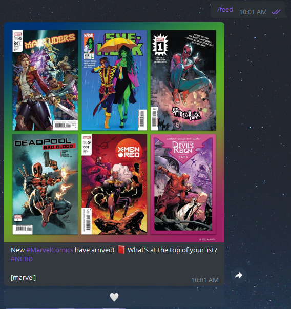
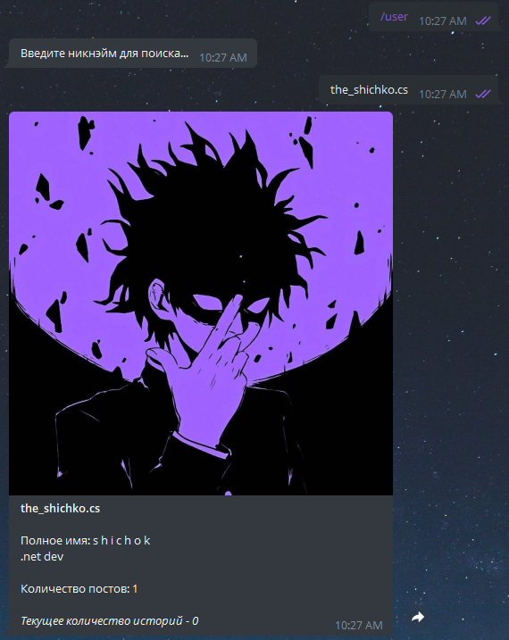
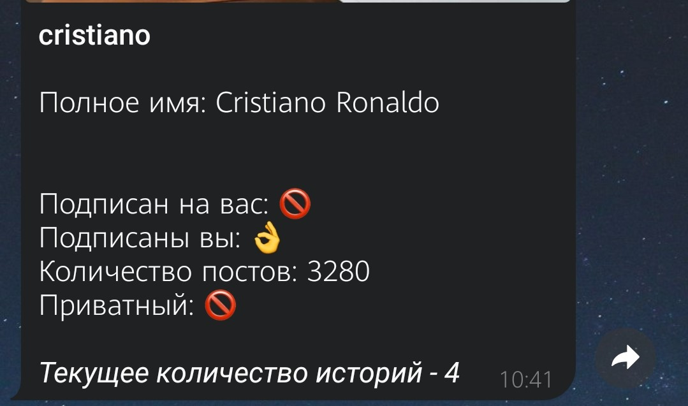
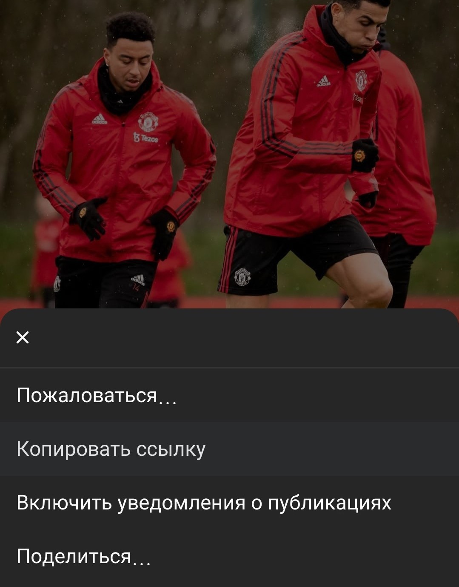
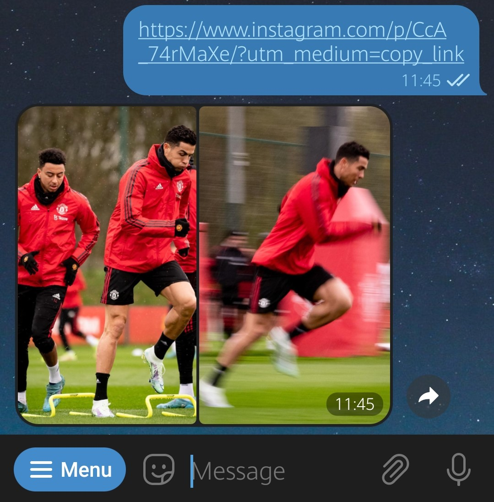

MyInsta
Основная информация
Телеграм бот позволяет частично заменить Инстаграм-клиент.
Функционал доступен как авторизированным пользователям, так и анонимным. Далее будут расписаны возможности MyInsta.
Авторизация (необязательна)
Чтобы использовать функционал бота полностью, необходимо войти в свой аккаунт инстаграма. Команда - /login.
💭Настоятельно
рекомендуем включить двухфакторную аутентификацию в настройках
аккаунта. Использование данной функции
для вашей же безопасности.
*даже если не собираетесь входить в боте.
Данные не передаются третьим лицам, гарантируем безопасность.
Получение историй
Для получения историй инста-пользователя используется команда /stories.
После нажатия команды, бот ожидает имя (никнэйм) инста-аккаунта. Имя можно ввести сообщением (the_shichko.cs) либо выбрать из предложенной панели.
💭Важно понимать, получив историю инста-пользователя у него не отобразится, что вы её смотрели. Это работает как у анонимных, так и авторизованных пользователей бота.
Панель аккаунтов появляется в 2-х случаях:
-
У авторизированных пользователей, список имитирует верхнюю ленту историй инстаграма.
-
У анонимных пользователях, при частом получении историй инста-аккаунта.
Примечание: необязательно при каждом вводе инста-аккаунта использовать команду /stories. Бот запоминает ваше последнее состояние (команду).
Получение ленты инстаграма
Для получения ленты используется команда /feed.
Полученные посты пользователь может лайкнуть (либо убрать лайк). Посты, которые уже бот прислал пользователю, дублироваться не будут. Если новых постов нет, отправится соответствеющее сообщение "Ничего нового нет".
Получение информации об аккаунте
Для получения информации используется команда /user.
После нажатия команды, бот ожидает имя (никнэйм) инста-аккаунта, которое необходимо отправить сообщением.
Вместе с информацией такой как:
- Полное имя.
- Биография.
- Количество постов.
- Текущее количество историй.
Отправляется аватар в хорошем качестве.
Если пользователь авторизирован, он видит дополнительную информацию.
Такую как подписан ли аккаунт на вас, подписаны ли вы, приватный ли аккаунт.
Скачивание поста/истории по ссылке
Бывает такое, что необходимо скачать материал, чтобы скинуть сообщением смешной видосик либо фотку подруги, но инстаграм даёт только ссылку.
Выберите пост/историю/хайлайт, cкопируйте ссылку либо поделитесь в телеграм боту.
Отправьте ссылку боту, а он вам контент.
Оповещение историй
Используйте команду /notifications.
Пользователи могут добавлять список аккаунтов, за которыми нужно "следить". Бот раз в 2 часа проходит по вашему списку, проверяет наличие новых историй и отправляет вам.
Для определенных пользователей количество аккаунтов в списке ограничен.
- Для анонимных доступно 5 мест
- Для авторизированных доступно 10 мест
Список отписоты
Функционал доступен только для авторизированных пользователей
Используйте команду /unfollowers, чтобы увидеть список аккаунтов, которые на вас не подписаны.
Обратная связь
Если у вас возникли трудности в пользовании, ошибка либо предложение нового функционала, возпользуетесь командой /feedback.
Распишите ваши мысли сообщением и отправьте. Разработчик свяжется с вами.
Ссылочные материалы
Телеграм-бот MyInsta - https://t.me/my_instag_bot
Разработчик - https://t.me/the_shichko